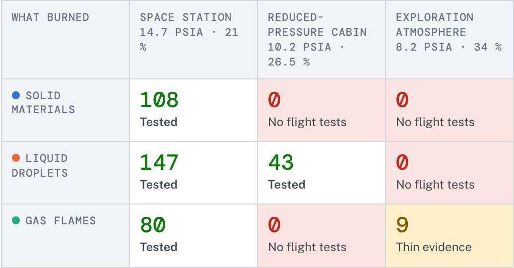

02
The evidence stops at 22.2 % oxygen for every solid material


- Droplets reached 34 %, but at 0.70 atm, not 0.56.
- At 25 % oxygen and above only 8 % of droplet flames went out on their own; below 18 % it was 92 %.
- Every run was in orbit. None at lunar gravity.
Evidence map3 / 7